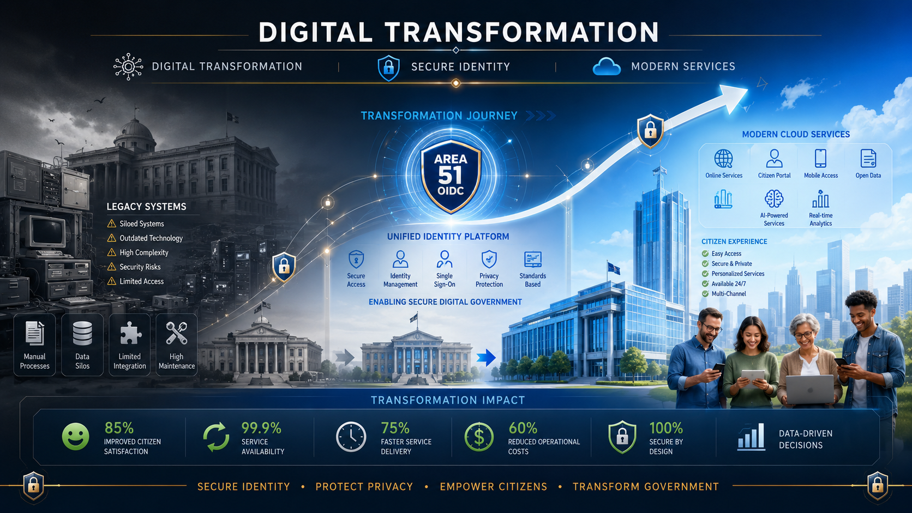
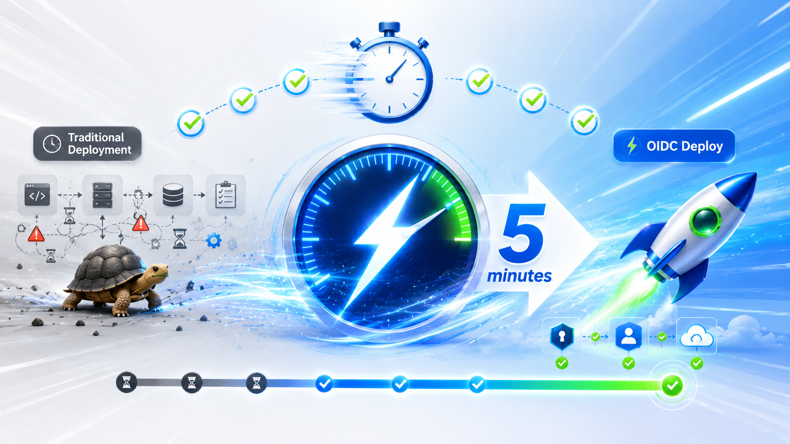
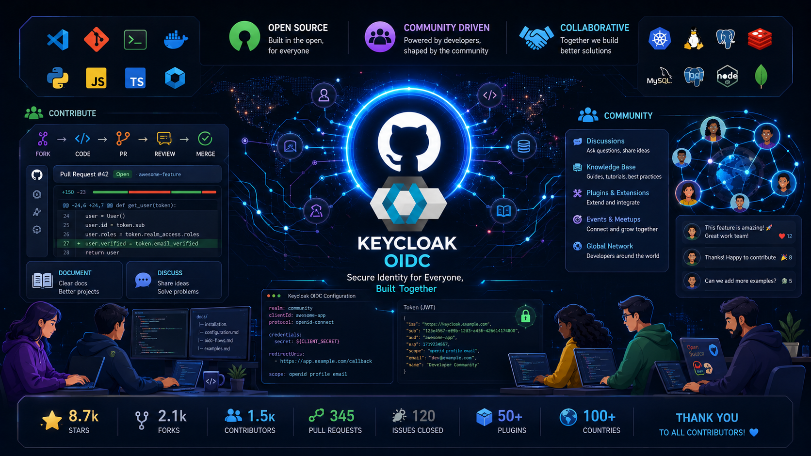

Galeria de recursos visuais
Conjunto institucional para apresentações formais, relatórios públicos e comunicação interna.
Descrição geral
Dez figuras panorâmicas 16:9 com orientação OpenID Connect e contexto corporativo institucional.
Um toque ou clique abre a versão ampliada dentro desta página.

Fluxo OIDC
Diagrama institucional de autenticação federada sob PKCE moderno.
Documentação técnica Arquitetura
Rede federada
HUB de identidades com relacionamento explícito entre aplicações internas autorizadas.
Site institucional
Implementação distribuída
Infraestrutura atual com encapsulamento institucional e governança de token.
OperaçõesFederalização institucional
Unidades administrativas conectadas com identidade institucional homogênea.
Setor público
Implementação acelerada de laboratório
Redução de intervalo inicial quando comparado apenas a cenários inteiramente manuais.
Comunicação institucional
Ecossistema corporativo
Canalização de serviços internos mediante camada institucional de identidade federada.
Corporativo
Capacitação formal
Suporte visual oficinas internas de OAuth e OpenID Connect.
Educação corporativa
Ecossistema comunitário
Estruturas colaborativas externas combinadas ao núcleo público institucional.
Transparência
Camada Docker
Governança de imagens com repetição previsível em datacenters físicos institucionais.
DevOps institucional
Modernização planejada
Jornadas formais atualizando plataforma identitária em órgão amplamente regulado.
Alto escalão institucionalOrientações de uso
Site institucional
Preferir cenários de topo de página relacionados rede federada quando apresentação externa institucional exigir simplicidade forte.
Apresentações internas formais
Integração corporativa, federalização pública ou modernização tecnológica compõem habitualmente relatórios de alto nível.
Documentação textual
Fluxos técnicos, implantações containerizadas e modelos distribuídos reduzem dispersão institucional de leitor técnico.
Programas de capacitação
Capítulo introdutório ou sumário executivo combinando laboratório e fluxo institucional resumido.
Especificações técnicas declaradas pela loja
Geometria
Formato: 16:9 horizontal
Resolução típica divulgada: 1920×1080 pixels ou equivalente exportado.
Arquivos
Formato: PNG
Tamanho médio indicado em documentação interna antiga: cerca de 2 MB por arquivo (variação natural permitida).
Localização dos arquivos
Repositório estático publicado em docs/assets/img/ com nomes padronizados:
- 01_oidc_flow.png
- 02_security_network.png
- 03_cloud_deployment.png
- 04_gov_federation.png
- 05_speed_setup.png
- 06_enterprise_integration.png
- 07_workshop_learning.png
- 08_community.png
- 09_docker_deployment.png
- 10_digital_transformation.png